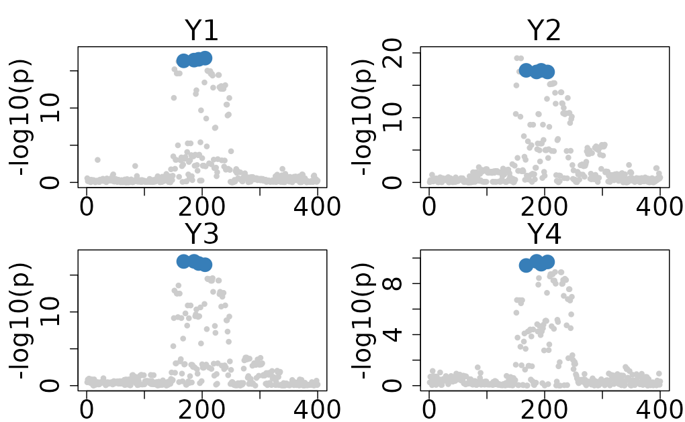
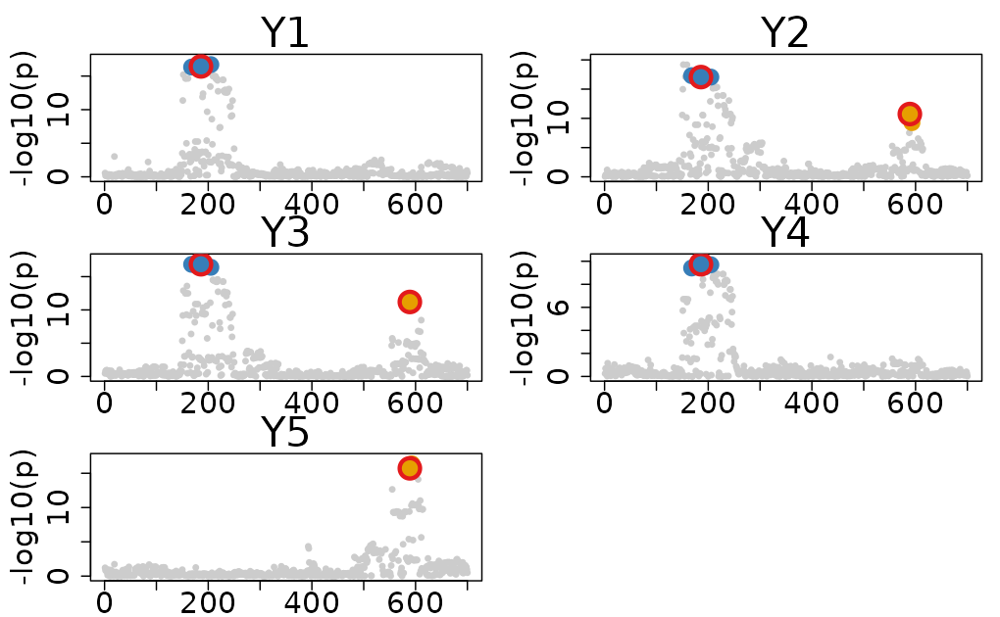
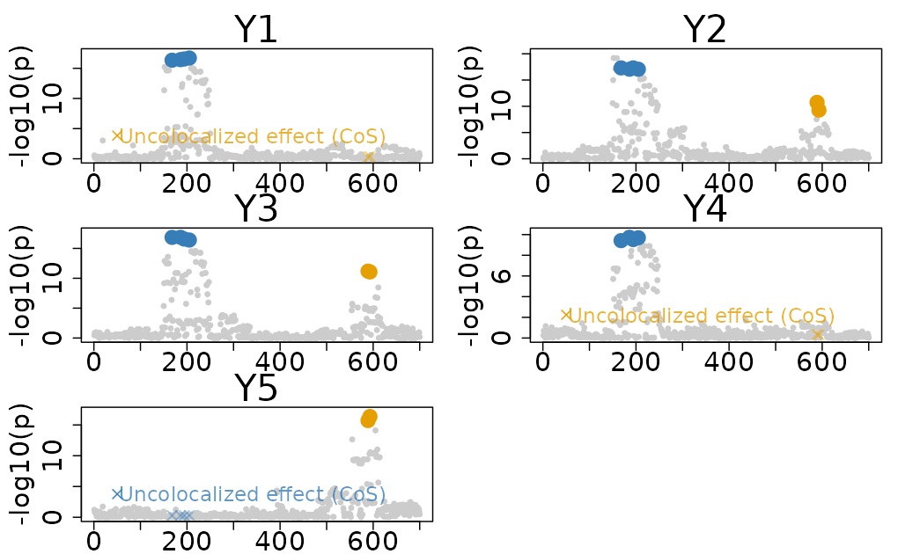
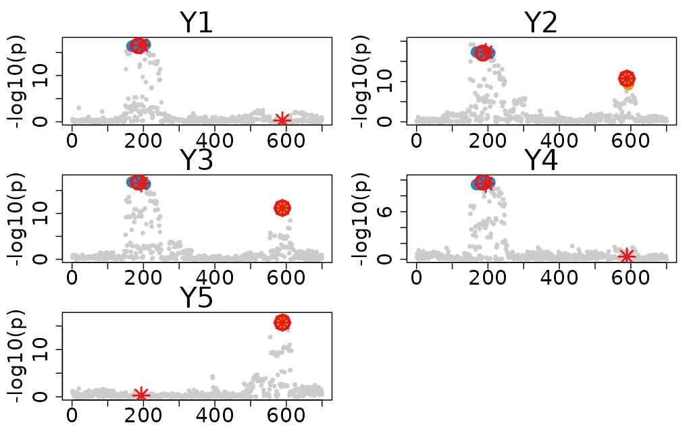
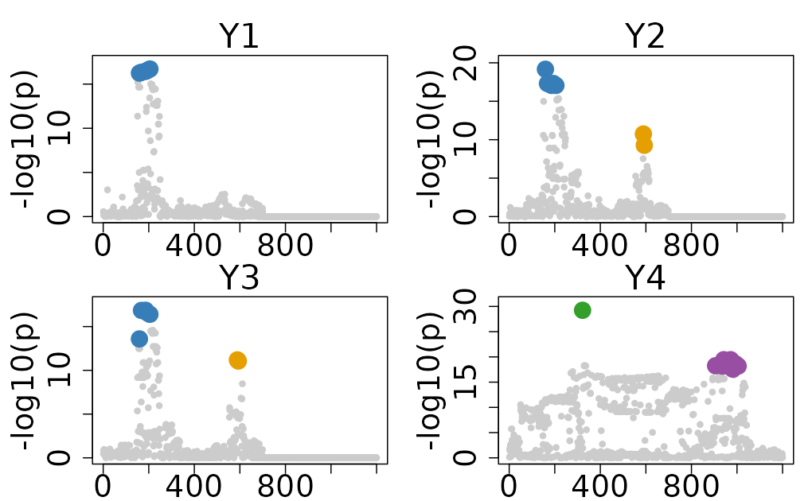
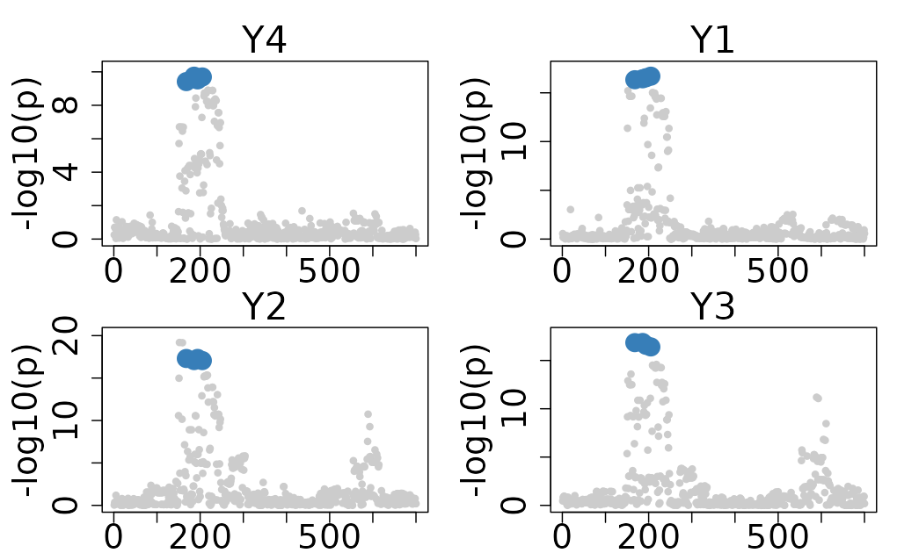
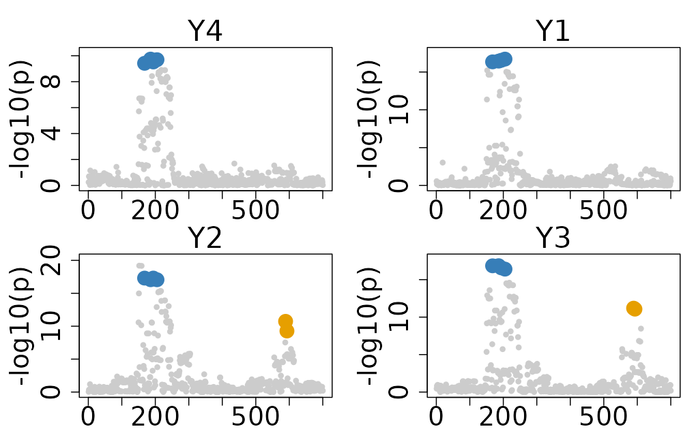

Visualization of ColocBoost Results
Source:vignettes/Visualization_ColocBoost_Output.Rmd
Visualization_ColocBoost_Output.RmdThis vignette demonstrates how to visualize and interpret the output of ColocBoost results.
Causal variants (simulated)
The dataset features two causal variants with indices 194 and 589.
- Causal variant 194 is associated with traits 1, 2, 3, and 4.
- Causal variant 589 is associated with traits 2, 3, and 5.
# Loading the Dataset
data(Ind_5traits)
# Run colocboost
res <- colocboost(X = Ind_5traits$X, Y = Ind_5traits$Y)
#> Validating input data.
#> Starting gradient boosting algorithm.
#> Gradient boosting for outcome 4 converged after 40 iterations!
#> Gradient boosting for outcome 5 converged after 59 iterations!
#> Gradient boosting for outcome 1 converged after 61 iterations!
#> Gradient boosting for outcome 3 converged after 91 iterations!
#> Gradient boosting for outcome 2 converged after 94 iterations!
#> Performing inference on colocalization events.
#> Extracting colocalization results with pvalue_cutoff = 0.001, cos_npc_cutoff = 0.2, and npc_outcome_cutoff = 0.2.
#> Keep only CoS with cos_npc >= 0.2. For each CoS, keep the outcomes configurations that pvalue of variants for the outcome < 0.001 and npc_outcome >0.2.1. Default plot function
The default plot of the colocboost results provides a visual representation of the colocalization events.
- The x-axis indicates the indices of variants, and the y-axis indicates the -log10(p-value) from marginal associations.
- The colors of the points represent the colocalization events, with different colors indicating different colocalization events.
colocboost_plot(res)
Parameters to adjust plot
-
plot_cols = 2(default) indicates the number of columns in the plot. -
y = "log10p"(default) with optional-
y = "z_original"for z-scores -
y = "vcp"for variant colocalization probabilities (single plot for all variants), -
y = "coef"for regression coefficients estimated from the ColocBoost model. -
y = "cos_vcp"for variant colocalization probabilities (multiple plots for each CoS - only draw VCP for variants in CoS to the colocalized traits).
-
-
plot_cos_idx = NULL(default) indicates all colocalization events are plotted.plot_cos_idx = 1can be specified to plot the 1st colocalization event, and so on. -
outcome_idx = NULL(default) indicates only the traits with colocalization are plotted.outcome_idx = c(1,2,5)can be specified to plot the traits 1, 2, and 5. -
plot_all_outcome = FALSE(default) indicates only the traits with colocalization are plotted. IfTRUE, it will plot all traits. -
cos_color = NULL(default) indicates the colors of the colocalization events. Specify a vector of colors to customize the plot.
2. Advanced options
There are several advanced options available for customizing the plot by deepening the visualization of the colocboost results.
2.1. Plot with a zoom-in region
You can specify a zoom-in region by providing a grange
argument, which is a vector indicating the indices of the region to be
zoomed in.
colocboost_plot(res, grange = c(1:400), outcome_idx = c(1:4))
2.2. Plot with marked top variants
You can highlight the top variants in the plot by setting
show_top_variables = TRUE. This will add a red circle to
top variants with highest VCP for each CoS.
colocboost_plot(res, show_top_variables = TRUE)
2.3. Plot CoS variants to uncolocalized traits to diagnostic the colocalization.
There are three options available for plotting the CoS variants to uncolocalized traits:
-
show_cos_to_uncoloc = FALSE(default), ifTRUEwill plot all CoS variants to all uncolocalized traits. -
show_cos_to_uncoloc_idx = NULL(default), if specified, will plot the specified CoS variants to all uncolocalized traits. -
show_cos_to_uncoloc_outcome = NULL(default), if specified, will plot the all CoS variants to the specified uncolocalized traits.
colocboost_plot(res, show_cos_to_uncoloc = TRUE)
#> Show all CoSs to uncolocalized outcomes.
2.4. Plot with added highlight points
You can highlight specific variants in the plot by setting
add_highlight = TRUE and
add_highlight_idx = **. This will add red dashed vertical
lines (default add_highlight_style = "vertical_lines") at
the specified index you want to highlight. Alternatively, you can use
add_highlight_style = "star" to change the highlight style
to the red star for the specified variants. For example, to add a
vertical line at true causal variants, you can set
add_vertical_idx = unique(unlist(Ind_5traits$true_effect_variants)).
Following plot also shows the top variants.
colocboost_plot(
res, show_top_variables = TRUE,
add_highlight = TRUE,
add_highlight_idx = unique(unlist(Ind_5traits$true_effect_variants)),
add_highlight_style = "star"
)
2.5. Plot with trait-specific sets if exists
There are two options available for plotting the trait-specific (uncolocalized) variants:
-
plot_ucos = FALSE(default), ifTRUEwill plot all trait-specific (uncolocalized) sets. -
plot_ucos_idx = NULL(default) indicates all confidence sets are plotted.plot_ucos_idx = 1can be specified to plot the 1st uncolocalized confidence sets, and so on.
Important Note: You should use
colocboost(..., output_level = 2) to obtain the
trait-specific (uncolocalized) information.
# Create a mixed dataset
data(Ind_5traits)
data(Heterogeneous_Effect)
X <- Ind_5traits$X[1:3]
Y <- Ind_5traits$Y[1:3]
X1 <- Heterogeneous_Effect$X
Y1 <- Heterogeneous_Effect$Y[,1,drop=F]
# Run colocboost
res <- colocboost(X = c(X, list(X1)), Y = c(Y, list(Y1)), output_level = 2)
#> Validating input data.
#> Starting gradient boosting algorithm.
#> Gradient boosting for outcome 1 converged after 86 iterations!
#> Gradient boosting for outcome 3 converged after 99 iterations!
#> Gradient boosting for outcome 4 converged after 103 iterations!
#> Gradient boosting for outcome 2 converged after 113 iterations!
#> Performing inference on colocalization events.
#> Extracting colocalization results with pvalue_cutoff = 0.001, cos_npc_cutoff = 0.2, and npc_outcome_cutoff = 0.2.
#> Keep only CoS with cos_npc >= 0.2. For each CoS, keep the outcomes configurations that pvalue of variants for the outcome < 0.001 and npc_outcome >0.2.
#> Extracting outcome-specific (uncolocalized) results with pvalue_cutoff = 1e-05, and npc_outcome_cutoff = 0.2.
#> For each uCoS, keep the outcome-specific (uncolocalized) events that pvalue of variants for the outcome < 1e-05 and npc_outcome >0.2.
colocboost_plot(res, plot_ucos = TRUE)
In this example, there are two colocalized sets (blue and orange) and two trait-specific sets for trait 4 only (green and purple). For comprehensive tutorials on result interpretation, please visit our tutorials portal at Interpret ColocBoost Output.
2.6 Plot with focal trait for disease prioritized colocalization
There are three options available for plotting the results from disease prioritized colocalization, considering a focal trait:
-
plot_focal_only = FALSE(default), ifTRUEwill only plot CoS with focal trait and ignoring other CoS. -
plot_focal_cos_outcome_only = FALSE(default) and recommend for visualization for disease prioritized colocalization. IfTRUEwill plot all CoS colocalized with at least on traits within CoS of focal traits.
# Create a mixed dataset
data(Ind_5traits)
data(Sumstat_5traits)
X <- Ind_5traits$X[1:3]
Y <- Ind_5traits$Y[1:3]
sumstat <- Sumstat_5traits$sumstat[4]
LD <- get_cormat(Ind_5traits$X[[1]])
# Run colocboost
res <- colocboost(X = X, Y = Y,
sumstat = sumstat, LD = LD,
focal_outcome_idx = 4)
#> Validating input data.
#> Starting gradient boosting algorithm.
#> Gradient boosting for focal outcome 4 converged after 25 iterations!
#> Gradient boosting for outcome 1 converged after 45 iterations!
#> Gradient boosting for outcome 3 converged after 66 iterations!
#> Gradient boosting for outcome 2 converged after 77 iterations!
#> Performing inference on colocalization events.
#> Extracting colocalization results with pvalue_cutoff = 0.001, cos_npc_cutoff = 0.2, and npc_outcome_cutoff = 0.2.
#> Keep only CoS with cos_npc >= 0.2. For each CoS, keep the outcomes configurations that pvalue of variants for the outcome < 0.001 and npc_outcome >0.2.
# Only plot CoS with focal trait
colocboost_plot(res, plot_focal_only = TRUE)
# Plot all CoS including at least one traits colocalized with focal trait
colocboost_plot(res, plot_focal_cos_outcome_only = TRUE)